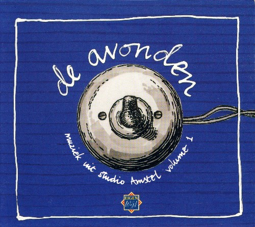

de avonden: muziek uit studio amstel, vol. 1

title: de avonden: muziek uit studio amstel, vol. 1
company: VPRO
format: CD
- the mountain goats: standard bitter love song
- the mountain goats: tollund man
- the mountain goats: neon orange glimmer song
- dogbowl - cigars, guitars, and topless bars
- simon joyner - disappear from here
- lo-lite - trash meets trash
- lo-lite - full of mouth
- john davis - blue
- john davis - zowie pop
- billy childish - what's wrong with me
- billy childish - a to z of your heart
- billy childish - keep your man in mind
- wio - victory
- wio - on discomfort
- wio - blind
- dogbowl & kramer - oklahoma
- polar - my life
- polar - don't want to be like you
- ford's imaginary inferno - kid's dream
- ford's imaginary inferno - the world ain't all that friendly no more
- the little rabbits - one, two me and you
- the little rabbits - weather prophet
- the little rabbits - le poste de radio
please mail any questions/comments/complaints, or just notes hello to:nall@themountaingoats.net